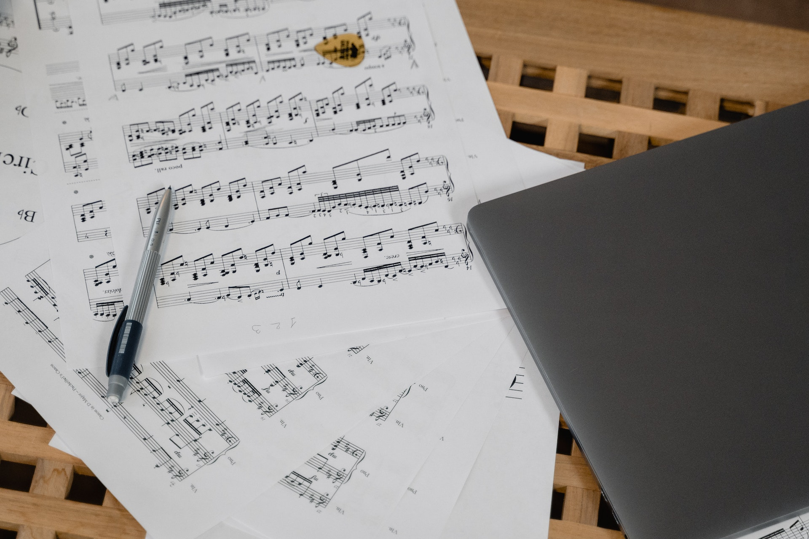

Nosotros
Un espacio de enseñanza musical
Planes de Estudio
Formaciones básicas
(A partir de los 9 años) Formación básica para niños (Taller de iniciación y ciclo medio)
(A partir de los 14 años) Formación básica para jóvenes y adultos (FOBA)
Trayecto Previo al Profesorado de Educación Musical (vigente hasta diciembre 2022)
Ver

Ver
Ciclo Superior
Profesorado de Música (orientación en Instrumento)
Profesorado de Educación Musical
Tecnicatura en Capacitación Instrumental
Ver
Programa de Estudio
En forma paulatina se están subiendo los programas de los diferentes espacios, ciclos, niveles y carreras. Si Ud. necesita algún programa que no se ha cargado aún, puede acercarse a los Jefes de Área. Generalmente los programas que se presentan en otras instituciones deben tener la firma de algún miembro del Equipo de Conducción, los alumnos que lo necesiten deben descargar, imprimir y acercarse al conservatorio para solicitar la firma mencionada.
Instrumento

Materias de FOBA


Información de cursada y tramites
Información Institucional
Infórmese en la página de internet de los planes de estudio, condiciones de cursada, tramites y constancias, horarios, contactos, fechas de inscripciones, ausencias y suplencias de profesores y toda información o novedad diaria de importancia. ROGAMOS ATENDER A ESTOS COMUNICADOS DIARIAMENTE.
Régimen de Asistencia
Se debe obtener un mínimo del 80% de asistencia de las clases dadas de cada materia. Superada la cantidad de inasistencias, el alumno deberá presentar una carta (adjuntando los certificados de salud, laborales o personales que justifiquen sus ausencias) al Consejo Académico Institucional (CAI) quien junto a los docentes a cargo, definirán la continuidad de la regularidad del alumno y las actividades o trabajos que deberá realizar para compensar los contenidos trabajados en su ausencia. De no concederse la continuidad de la regularidad, el alumno podrá seguir cursando como Oyente, pero deberá acreditar la materia como estudiante Libre o recursarla (según lo que el Régimen Académico establezca)
Préstamo de aulas e instrumentos.
Se autoriza el préstamo de aulas (según disponibilidad en el momento de solicitarla) e instrumentos (sólo dentro del establecimiento). Las aulas e instrumentos se mantienen con el aporte de cooperadora y es responsabilidad de todos contribuir a su orden, limpieza y cuidado.
Acreditación de las materias
Materias Promocionales: No tienen Examen Final aprobando la cursada con 7 en cada cuatrimestre. Por debajo de esa nota se va a Examen Final.
Materias con Examen Final: Se aprueba con 4 en cada cuatrimestre y el Examen Final con 4. Materias cuya cursada ha sido aprobada NO pueden re-cursarse. Una vez aprobada la cursada hay cinco años para rendir el Examen Final, excedido el plazo hay que re-cursar la materia.
Exámenes Finales
Exámenes Finales de diciembre: En cada mesa de diciembre hay un 1er llamado y un 2do llamado, debiendose optar por solo uno de los dos. En las materias grupales es el profesor quien confecciona la lista de los alumnos que aprobaron la cursada y van a Examen Final. En las materias Taller de iniciación instrumental, Instrumento, Canto, Instrumento armónico, Repertorio, Conjunto de cámara y materias Previas y Libres es el alumno el que deberá inscribirse para el Examen Final por internet. Las fechas en que se desarrollarán las Mesas de Examen se expondrán en cartelera y en internet.
Exámenes de marzo o agosto: El alumno debe inscribirse el solo en TODAS las materias en que se presentará a rendir examen.